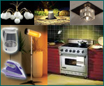
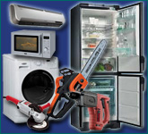

Об определении мощности электрооборудования

ОПРЕДЕЛЕНИЕ ЭЛЕКТРИЧЕСКОЙ МОЩНОСТИ ОБОРУДОВАНИЯ
Posted By admin On Июль 17, 2011 @ 2:26 пп In | Comments Disabled
Если для
обеспечения надежной работы электрооборудования Вы пришли к выводу о
необходимости приобретения электрогенератора (миниэлектростанции),
стабилизатора напряжения или источника бесперебойного питания (UPS),
перво-наперво Вам необходимо рассчитать мощность нагрузки, то есть
суммарной мощности одновременно включаемого оборудования (потребителей).
При этом не сведущим в электротехнике людям порой довольно сложно
разобраться в указанных на оборудовании различных числах, измеряемых в
Вт или ВА, и каком-то cos?. Обозначают эти величины полную и полезную
мощность, которые связаны между собой посредством cos?.
Определение электрической мощности потребителей
заключается в расчете общей полной (суммарной) электрической мощности
всего подключаемого электрооборудования. Единицей измерения полной
мощности выступает вольт-ампер (ВА, VA). Поскольку основная часть
потребители электроэнергии является устройствами переменного тока, то
для подсчета их полной мощности используется концепция реактивной и
активной мощности, которая в силу малости эффектов не актуальна для
использующего постоянный ток электрооборудования. Так же не следует
забывать, что в момент включения оборудования с электродвигателем
потребляемая мощность будет в несколько раз превышать указанное в
технических характеристиках значение по причине возникновения пусковых
(пиковых) токов.
Принципиальное различие между активной и реактивной мощностью
заключается в том, что в первом случае практически вся потребляемая
электроэнергия используется на выполнение полезной работы, во втором
случае часть потребляемой электроэнергии расходуется на создание
электромагнитных полей, не связанных с выполнением полезной работы.


Помимо активной и реактивной мощности, для оборудования, имеющего в своей конструкции электродвигатель, необходимо принимать во внимание возникающие при его запуске пусковые или пиковые токи, в несколько раз превышающие номинальное значение. Несмотря на кратковременность (от долей до нескольких секунд), они оказывают существенное влияние на работу миниэлектростанций (электрогенераторов), стабилизаторов и источников бесперебойного питания. Многие производители игнорируют этот параметр в технических характеристиках выпускаемого оборудования и его приходиться уточнять у консультанта при покупке или в сервисном центре. Измерить значение пускового тока бытовым прибором не представляется возможным, поэтому, в крайнем случае, можно использовать усредненные значения коэффициентов пускового тока (ввиду приблизительности эти величины могут не отражать реальной ситуации).
| Оборудование | Коэффициент пускового тока |
Оборудование | Коэффициент пускового тока |
| Телевизор, пылесос | 1 | Циркулярная пила | 2 |
| Компьютер | 2 | Электропила | 2 |
| СВЧ-печь | 2 | Электрорубанок | 2 |
| Стиральная машина | 3 | Болгарка (УШМ) | 2 |
| Кондиционер | 5 | Дрель/Перфоратор | 3 |
| Холодильник | 4 | Бетономешалка | 3 |
| Электромясорубка | 7 | Погружной насос | 7 |
То есть для окончательного
определения электрической мощности такого потребителя, как упоминавшийся
выше холодильник, необходимо полученное ранее значение 1250 ВА умножить
на коэффициент пускового тока и наши скромные паспортные 700 Вт
превратятся в 1250 х 4 = 5000 ВА.
Различия в коэффициентах пускового тока обусловлены условиями работы
электродвигателя после момента включения. Так двигатель холодильника или
погружного насоса помимо выхода на рабочие обороты должен сразу после
включения начать качать соответственно хладагент или воду, поэтому
сопротивление движению изначально максимально. А у дрели или пылесоса за
счет холостого хода при разгоне двигателя сопротивление движению
нарастает плавно.
Большие пусковые токи при включении имеют и лампы накаливания, поскольку
сопротивление холодной спирали в несколько раз ниже, чем раскаленной.
Коэффициент пускового тока в этом случае может равняться 5 – 13, но
ввиду кратковременности (0,05 – 0,30 секунд) его можно не учитывать для
нескольких ламп, но на производстве, где их количество может достигать
сотен, пренебречь возникающими скачками тока уже не удастся. Для
люминесцентных ламп с электронным поджигом коэффициент пускового тока
равен 1,1 – 2,0.
Copyright © 2015 УЮТНЫЙ ДОМ, КОМФОРТНЫЙ БЫТ. All rights reserved.